3.1 Stellar life cycle
Classifying stars
Stars look different to us: some are brighter and there is a range of colours. This is because stars vary in size, mass, chemical composition, temperature, speed and distance from the Earth.
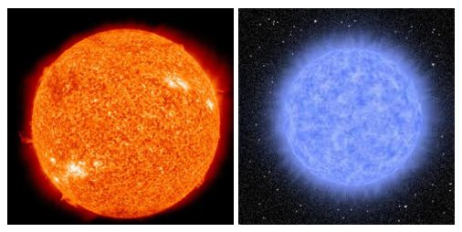
Although stars aren't living, they have a birth, a life and a death. A star begins in a nebula (a cloud of gas and dust), where hydrogen and helium clump together into larger masses that attract more matter by gravity, until they are big enough to form a star. The star's fate then depends on its mass: it may become a red giant and then a white dwarf, or a neutron star, or even a black hole.
Humans don't live long enough (about 100 years) to notice changes in stars. But looking at all the different stars in the sky is like a snapshot showing every stage at once, just as a snapshot of the human race would show people being born, growing up, growing old and dying.
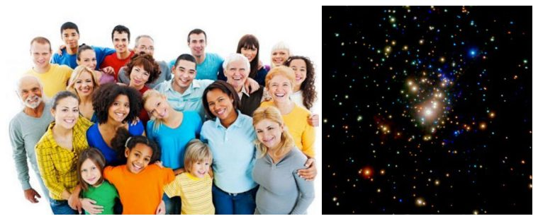
Occasionally we see the death of a star: a spectacular explosion releasing enormous amounts of light and radiation. The most famous recent supernova is SN1987A, which exploded in the Large Magellanic Cloud. It was visible to the naked eye and is one of the best-studied objects outside our galaxy.
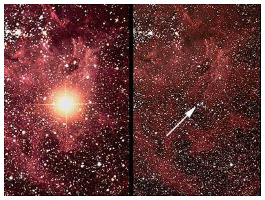
Star stages: birth
- Gas nebula (cloud): an enormous cloud of gas and dust begins to collapse under gravity. Mass collects at the centre, and the cloud gets hotter and denser.
- Protostar: the collapsing cloud is hot enough to glow, but not yet hot enough for nuclear fusion in its core.
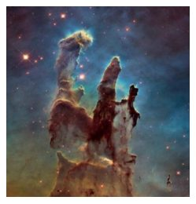
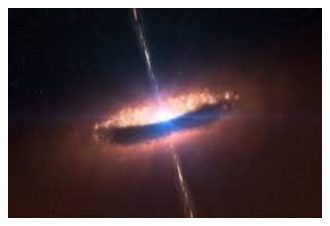
Star stages: life and late life
- Main sequence star: a star that is fusing hydrogen into helium in its core. Its position on the main sequence depends on its mass.
- Red giant / supergiant: when the star runs out of hydrogen in its core, the core collapses and heats up while the outer layers swell and cool. Eventually the core is hot enough to fuse helium into carbon, oxygen and other heavier elements.
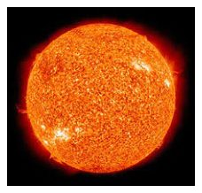
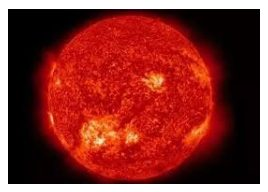
Star stages: death
What happens when a red giant or supergiant runs out of helium depends on how massive it is.
White dwarfs (death for smaller stars, like the Sun, up to about 10 solar masses):
- The star becomes unstable, fluctuating in brightness and size.
- Its outer layers drift away as dust and gas (a planetary nebula).
- The core remains, but fusion has stopped. It is still white-hot: a white dwarf.
- It is very dim because it is so small (about the size of the Earth).
- It slowly cools over millions of years, getting dimmer until it can't be seen (a brown/black dwarf).
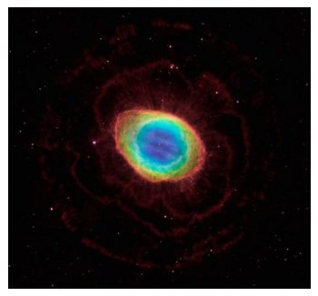
Supernova (larger stars, more than 10 solar masses): these explode spectacularly, blowing away huge amounts of gas and dust. They can outshine their entire galaxy during the explosion! The amount of mass lost decides their final fate:
- If the star loses most of its mass, it becomes a neutron star: the collapsed core of a very large star, as dense as an atomic nucleus (a teaspoon would weigh about 10 million tonnes), only about 10 km in radius but about twice the mass of the Sun.
- If it keeps most of its mass, it becomes a black hole: a collapsed core so dense that its gravity is incredibly strong. To escape you would need to travel faster than light, which is impossible, so not even light can escape and it appears black.
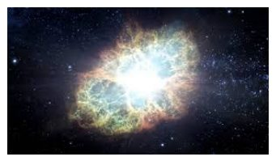
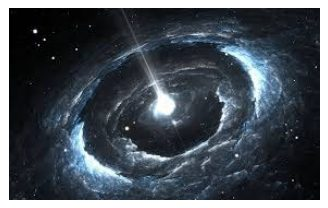
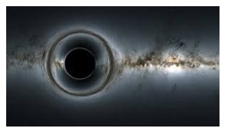
The stellar life cycle
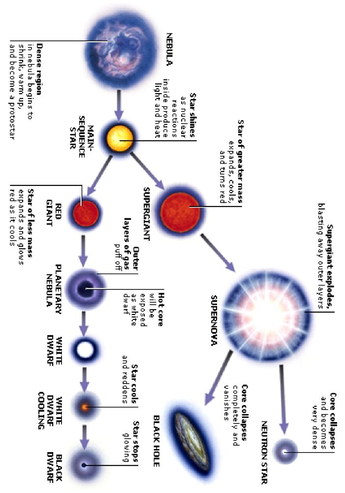
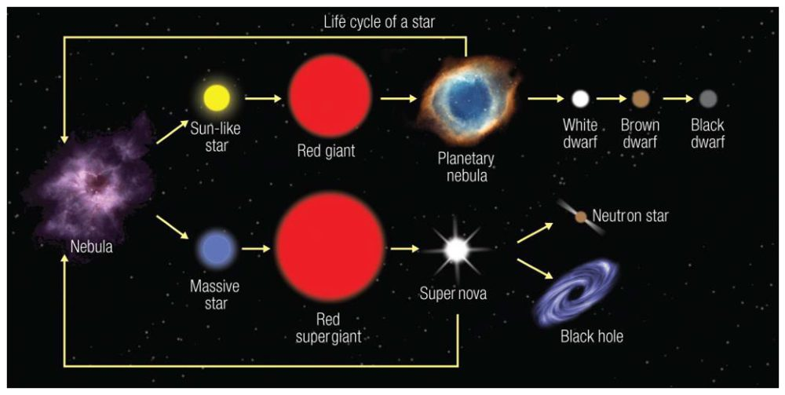
The top row of the diagram shows the life cycle of a medium-sized star like our Sun (one solar mass). The bottom row shows a massive star (about 10 solar masses or more).
When a star moves away from the main sequence to become a giant, what has happened to start the process?
Write out the stages of our Sun's life cycle, given that it is a medium-sized star.
Nebula → protostar → main sequence star → red giant → planetary nebula → white dwarf → black dwarf (the top pathway in the figure).
Identify the stage in the Sun's life cycle when:
- the star's size is greatest:
- the star's size is smallest:
- its brightness is greatest:
- the emission of matter into its surroundings is greatest:
Living things have a life cycle. Is the Sun a living thing? Justify your response.
No. Although it has a "life cycle" (birth, life and death), the Sun doesn't carry out the processes of living things, such as respiration, growth by cells, reproduction or response to stimuli.
- Which life cycle stages are the same for a Sun-like star and a star of 10 solar masses? 5. Which stages are different for a Sun-like star and a 30 solar mass (very large) star?
- Nebula, protostar, main sequence star and giant (red giant/supergiant).
- The stages after the giant phase: the Sun becomes a planetary nebula and then a white dwarf; the very large star explodes as a supernova and becomes a black hole (or neutron star).
Explain why a black hole is black.
Its gravity is so strong that nothing, not even light, can escape once it passes the event horizon. Since it releases no light, it appears black.
Can a star be "recycled"? Explain.
Yes. A planetary nebula or supernova sends gas and dust out into space, and this material is the basic ingredients of a star. If gravity pulls it back together, it can form a new nebula and protostar. (Our Sun and Solar System formed from material recycled from earlier stars.)
3.2 Hertzsprung–Russell (HR) diagrams
Around 1910, Ejnar Hertzsprung and Henry Norris Russell developed a diagram plotting a star's brightness (magnitude) against its temperature: the Hertzsprung–Russell diagram. Every star can be plotted on it according to:
- how much light it produces (y-axis)
- its temperature (x-axis).
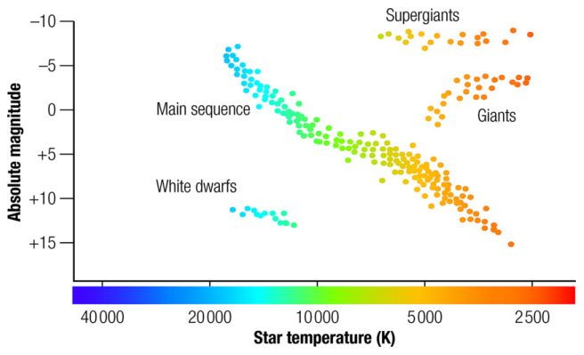
Brightness: two scales
The brightness of a star can help us work out how big it is. There are two scales:
- Apparent magnitude: how bright a star looks from Earth.
- Absolute magnitude: how bright a star actually is, corrected for its distance. It is how bright the star would look from exactly 10 parsecs (about 33 ly) away.
Absolute magnitude is more useful in astronomy because it lets us compare stars fairly.
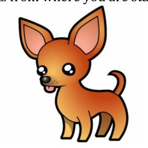
Brightness (y-axis)
Why does the y-axis scale look upside-down? Ancient astronomers grouped stars by apparent brightness: Class 1 was the brightest, Class 6 the dimmest. With better telescopes and absolute brightness, we have found stars brighter than Class 1, so the scale extends into negative values, and stars dimmer than Class 6, so it extends to larger positive values. Brighter stars have smaller (more negative) magnitudes.
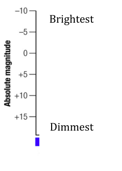
Temperature (x-axis)
The colour of a star depends on its surface temperature, which is measured in kelvin. The Kelvin scale starts at absolute zero (−273°C); a 1 K change equals a 1°C change, so only the zero point is different. Star surface temperatures range from about 2000 K to 20 000 K (their cores are far hotter).
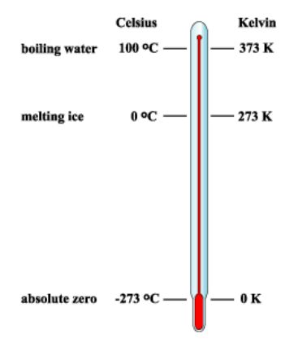
Why does the x-axis look back-to-front? It runs from hot (blue) on the left to cool (red) on the right: in order of increasing wavelength. As the wavelength of the light increases, the temperature decreases.
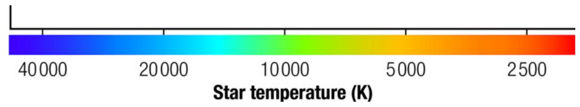
Axis labels
The vertical axis always shows brightness, brightest at the top (with absolute magnitude, positive numbers at the bottom and negative at the top). The horizontal axis shows temperature (hottest to coolest, left to right) or spectral class (a classification based on temperature). The positions of the stars on the diagram are the same however the axes are labelled.
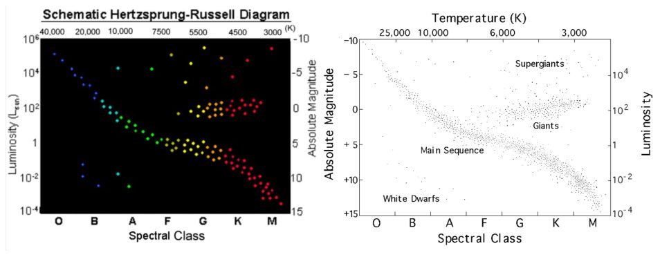
- Describe the trend along the main sequence. b. Describe red giant stars by their brightness and temperature. c. Describe white dwarf stars by their brightness and temperature.
- An almost linear band from the top left (hot, bright, blue stars) to the bottom right (cool, dim, red stars).
- Red giants are cool (red) and bright (because they are very large).
- White dwarfs are hot (white) and dim (because they are very small).
The star Sadr (in the constellation Cygnus) has apparent magnitude +2.23, absolute magnitude −6.12 and temperature 6500 K. i. Where would Sadr appear on the HR diagram? ii. Is it a white dwarf, red giant or main sequence star?
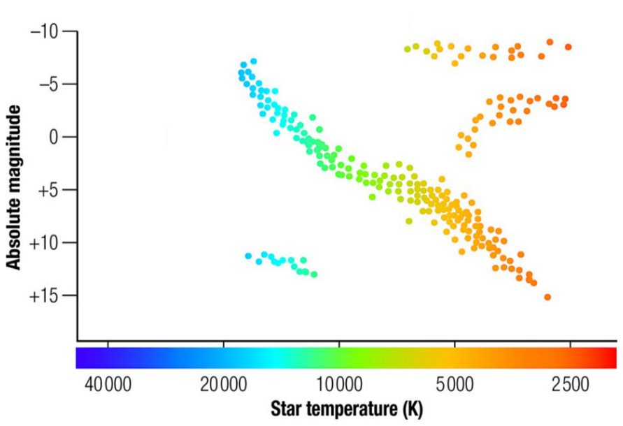
- At about 6500 K on the temperature axis and −6 on the absolute magnitude axis: above the main sequence, in the upper region with the giants and supergiants.
ii. It is classified as a red giant (giant region: very bright for its temperature).
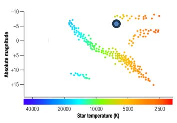
Describe how the light produced by a hotter star is different from the light of a cooler star.
A hotter star produces more light overall (it is more luminous), and the peak of its light is more towards the blue end of the spectrum (shorter wavelengths). A cooler star's light peaks towards the red end.
Question 3.2.3
These stars are in the same constellation:
| Star | Bayer label | Apparent magnitude | Absolute magnitude |
|---|---|---|---|
| Regulus | α | 1.36 | −0.52 |
| Denebola | β | 2.14 | 1.92 |
| Algieba | γ | 2.37 | −0.92 |
| Zosma | δ | 2.56 | 1.32 |
Which star is the dimmest in the constellation as seen by an observer in Melbourne?
"As seen" means apparent magnitude, and the dimmest has the largest apparent magnitude (2.56).
Which star is closest to being 33 light years (10 pc) from Earth?
At exactly 10 pc, apparent magnitude equals absolute magnitude. Denebola's two values are closest (2.14 and 1.92).
Which star is the most distant from Earth?
Algieba has the biggest gap between apparent and absolute magnitude (2.37 − (−0.92) = 3.29): it is truly bright but looks dim, so it must be far away.